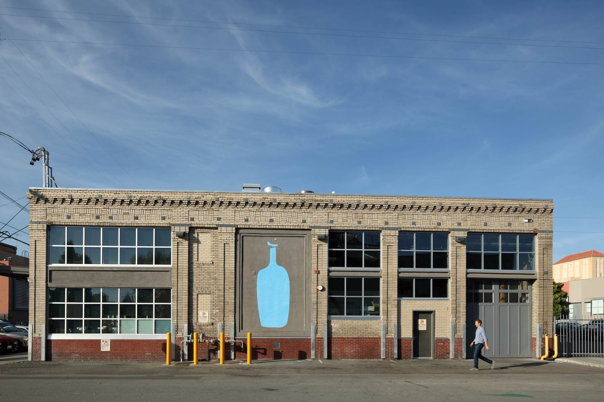

联系我们

查看BLUE COFFEE微博
庆祝咖啡的艺术和科学
阅读更多>
伪造的故事是这样的：在17世纪后期，土耳其军队横扫东欧和中欧的大部分地区，于1683年抵达维也纳。围困和绝望，维也纳人需要一名能够越过土耳其线路向附近传递信息的使者波兰军队。讲土耳其语和阿拉伯语的Franz George Kolshitsky接受了土耳其制服伪装的任务。经过许多危险的近距离通话，科尔希茨基完成了他的英勇行动，传递了波兰人即将拯救维也纳的消息。
咖啡中的绿咖啡买家
9月13日，土耳其人被驱逐出城市，留下他们带来的一切，包括被认为是骆驼饲料的奇怪豆袋。居住在阿拉伯世界多年的Kolshitsky知道这些是咖啡袋。利用维也纳市长给他的钱，Kolshitsky买了咖啡，开了中欧第一家咖啡馆（The Blue Bottle），把咖啡带到感恩的维也纳。
为了纪念Kolshitsky的英雄事迹，他将自己的事业命名为Blue Bottle Coffee，并开始了最高级咖啡历史的另一个篇章。
现在，将近15年后，由于许多忠实客人的热情支持，Blue Bottle Coffee已经发展成为一个小型咖啡馆网络，一个浓缩咖啡车，偶尔的弹出窗口以及一小群Loring烘焙机。我们仍然团结一致的目的是为要求它的每个人提供美味的咖啡。我们对新鲜度和高峰风味有了更具体的了解。不可思议和愉快，现在有数百人。
我们期待着你的到来。
查看BLUE COFFEE微博
庆祝咖啡的艺术和科学
阅读更多>